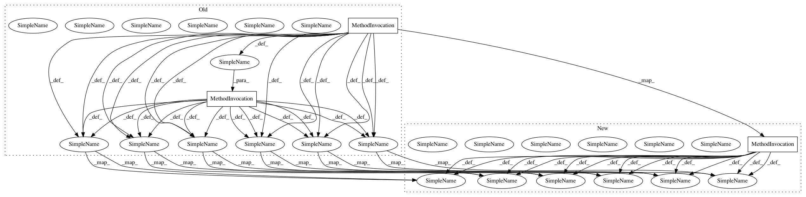

2bf236792fee65bd2ceab922451a230a3a986cf6,memcnn/models/tests/test_revop.py,,test_reversible_block_fwd_bwd,#,25
Before Change
keep_input = keep_input_sub or implementation_bwd == -1 or implementation_fwd == -1
// print(bwd, coupling, keep_input, implementation_fwd, implementation_bwd)
// test with zero padded convolution
X = Variable(torch.from_numpy(data.copy()))
Ytarget = Variable(torch.from_numpy(target_data.copy()))
Xshape = X.shape
Gm2 = copy.deepcopy(Gm)
rb = revop.ReversibleBlock(Gm2, coupling=coupling, implementation_fwd=implementation_fwd,
implementation_bwd=implementation_bwd, keep_input=keep_input)
rb.train()
rb.zero_grad()
optim = torch.optim.RMSprop(rb.parameters())
optim.zero_grad()
if not bwd:
Xin = X.clone()
Y = rb(Xin)
Yrev = Y.clone()
Xinv = rb.inverse(Yrev)
else:
Xin = X.clone()
Y = rb.inverse(Xin)
Yrev = Y.clone()
Xinv = rb(Yrev)
loss = torch.nn.MSELoss()(Y, Ytarget)
// has input been retained/discarded after forward (and backward) passes?
if keep_input:
After Change
keep_input = keep_input_sub or implementation_bwd == -1 or implementation_fwd == -1
// print(bwd, coupling, keep_input, implementation_fwd, implementation_bwd)
// test with zero padded convolution
X = torch.from_numpy(data.copy())
Ytarget = torch.from_numpy(target_data.copy())
Xshape = X.shape
Gm2 = copy.deepcopy(Gm)
rb = revop.ReversibleBlock(Gm2, coupling=coupling, implementation_fwd=implementation_fwd,
implementation_bwd=implementation_bwd, keep_input=keep_input)
rb.train()
rb.zero_grad()
optim = torch.optim.RMSprop(rb.parameters())
optim.zero_grad()
if not bwd:
Xin = X.clone()
Y = rb(Xin)
Yrev = Y.clone()
Xinv = rb.inverse(Yrev)
else:
Xin = X.clone()
Y = rb.inverse(Xin)
Yrev = Y.clone()
Xinv = rb(Yrev)
loss = torch.nn.MSELoss()(Y, Ytarget)
// has input been retained/discarded after forward (and backward) passes?
if keep_input:
In pattern: SUPERPATTERN
Frequency: 1
Non-data size: 3
Instances
Project Name: silvandeleemput/memcnn
Commit Name: 2bf236792fee65bd2ceab922451a230a3a986cf6
Time: 2019-05-28
Author: silvandeleemput@gmail.com
File Name: memcnn/models/tests/test_revop.py
Class Name:
Method Name: test_reversible_block_fwd_bwd